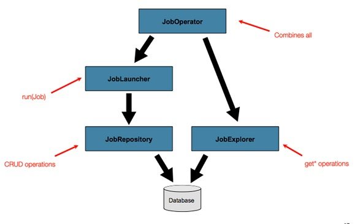
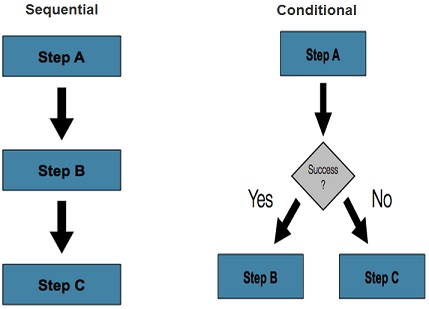
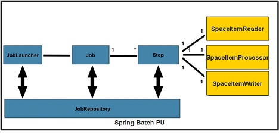
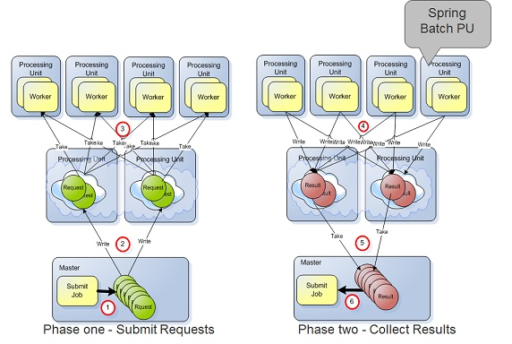
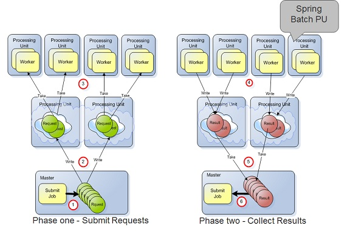

Batch processing involves usually complex flows using conditional or sequential steps. This involves relatively large CPU cycles and IO access. In such case the data access time required for the processing is relatively small compared to the processing/IO activities duration time.
To allow batch processing systems to leverage available resources on the network/cloud, the batch processing system should be able to scale in a dynamic manner across multiple machines.
The GigaSpaces Spring Batch PU provides:
Enhanced performance: – Distributed parallel processing. – Distributed Task execution partitioning. – In-memory distributed state management.
Management and Monitoring: – Task execution queuing. – Distributed Deployment environment. – Continuous High-Availability.
Scalability
–
Spring Batch is a lightweight, comprehensive batch framework designed to enable the development of robust batch applications vital for the daily operations of enterprise systems. Spring Batch builds upon the productivity, POJO-based development approach, and general ease of use capabilities people have come to know from the Spring Framework, while making it easy for developers to access and leverage more advance enterprise services when necessary. Spring Batch is not a scheduling framework. There are many good enterprise schedulers available in both the commercial and open source spaces such as Quartz, Tivoli, Control-M, etc. It is intended to work in conjunction with a scheduler, not replace a scheduler.
Spring Batch provides reusable functions that are essential in processing large volumes of records, including: Logging, Tracing, Transaction management, Job processing statistics, Job restart, Job skip, resource management, etc.
The Spring Batch runtime environment includes the following main components:

Spring Batch support both sequential and conditional flows. This allows building flexible batch processing systems.

A typical batch program generally reads a large number of records from a database, file, or queue, processes the data in some fashion, and then writes back data in a modified form. Spring Batch automates this basic batch iteration, providing the capability to process similar transactions as a set, typically in an offline environment without any user interaction. Batch jobs are part of most IT projects and Spring Batch is the only open source framework that provides a robust, enterprise-scale solution.
In GigaSpaces
Polling Container and Spring Batch approach should be used when the processing activity consumes relatively large amount of CPU and takes a large amount of time. It is also relevant if the actual data required for the processing is not stored within the space, or the time it takes to retrieve the required data from the space is much shorter than the time it takes to complete the processing.
The Spring Batch PU encapsulates all the required components to run a Spring Batch instance:

The Spring Batch PU supports the Round Robin Workers mode and the Dedicated Workers mode.
With the Round Robin Worker mode a Spring Batch PU instance will be consuming requests from all the space partitions in round robin manner.

With the Dedicated Worker mode a Spring Batch PU instance will be consuming requests from a dedicated specific space partition.

The Spring Batch PU implementation includes the following components:
| Components | Description |
|---|---|
| Space | A space proxy used by the SpaceItemReader, SpaceItemProcessor and SpaceItemWriter to consume Requests and send back Results. |
| ItemRequest | A Request class. Generated by the Master and consumed by the SpaceItemReader. |
| ItemResult | A Result class. Generated by the SpaceItemProcessor and consumed by the Master. |
| JobRunner | Spring Batch JobRunner Bean |
| SpaceItemReader | org.springframework.batch.item.ItemReader implementation |
| SpaceItemProcessor | org.springframework.batch.item.ItemProcessor implementation |
| SpaceItemWriter | org.springframework.batch.item.ItemWriter implementation |
| JobRepository | Spring Batch JobRepository Bean. |
| JobLauncher | Spring Batch JobLauncher Bean. |
| JobRunner | JobRepository Bean. Encapsulates the JobLauncher. Initiates the processing activity. |
| JobRegistry | MapJobRegistry Bean. |
| SpaceJob | Spring Batch Job. Includes a Spring batch Step with a tasklet using the SpaceItemReader,SpaceItemWriter,SpaceItemProcessor. |
Components implementation:
<?xml version="1.0" encoding="UTF-8"?>
<beans xmlns="http://www.springframework.org/schema/beans"
xmlns:xsi="http://www.w3.org/2001/XMLSchema-instance"
xmlns:os-core="http://www.openspaces.org/schema/core"
xmlns:os-events="http://www.openspaces.org/schema/events"
xmlns:os-remoting="http://www.openspaces.org/schema/remoting"
xsi:schemaLocation="http://www.springframework.org/schema/batch http://www.springframework.org/schema/batch/spring-batch-2.1.xsd
http://www.openspaces.org/schema/core http://www.openspaces.org/schema/core/openspaces-core.xsd
http://www.openspaces.org/schema/events http://www.openspaces.org/schema/events/openspaces-events.xsd
http://www.openspaces.org/schema/remoting http://www.openspaces.org/schema/remoting/openspaces-remoting.xsd
http://www.springframework.org/schema/beans http://www.springframework.org/schema/beans/spring-beans.xsd"
xmlns:p="http://www.springframework.org/schema/p">
<bean id="itemReader" class="com.gigaspaces.springbatch.SpaceItemReader" >
<property name="blocking" value="false"/>
<property name="dedicatedWorker" value="true"/>
</bean>
<bean id="itemWriter" class="com.gigaspaces.springbatch.SpaceItemWriter" />
<bean id="itemProcessor" class="com.gigaspaces.springbatch.SpaceItemProcessor" />
<job id="spaceJob" xmlns="http://www.springframework.org/schema/batch" restartable="false" >
<step id="step1" >
<tasklet>
<chunk reader="itemReader" writer="itemWriter" processor="itemProcessor" commit-interval="2" />
</tasklet>
</step>
</job>
<bean id="jobRepository" class="org.springframework.batch.core.repository.support.MapJobRepositoryFactoryBean">
<property name="transactionManager" ref="transactionManager"/>
</bean>
<bean id="jobLauncher" class="org.springframework.batch.core.launch.support.SimpleJobLauncher">
<property name="jobRepository" ref="jobRepository" />
</bean>
<bean id="jobRunner" class="com.gigaspaces.springbatch.JobRunner">
</bean>
<bean id="jobRegistry" class="org.springframework.batch.core.configuration.support.MapJobRegistry" />
<bean id="transactionManager" class="org.springframework.jdbc.datasource.DataSourceTransactionManager" lazy-init="true">
<property name="dataSource" ref="dataSource" />
</bean>
<bean id="dataSource" class="org.apache.commons.dbcp.BasicDataSource" destroy-method="close" >
<property name="driverClassName" value="org.hsqldb.jdbcDriver"/>
<property name="url" value="jdbc:hsqldb:hsql://localhost/xdb"/>
<property name="username" value="sa"/>
<property name="password" value=""/>
</bean>
<os-core:space-proxy id="space" name="mySpace"/>
<os-core:giga-space id="gigaSpace" space="space" />
<os-core:giga-space-context/>
</beans>
<?xml version="1.0" encoding="UTF-8"?>
<beans xmlns="http://www.springframework.org/schema/beans"
xmlns:xsi="http://www.w3.org/2001/XMLSchema-instance"
xmlns:os-core="http://www.openspaces.org/schema/core"
xmlns:os-events="http://www.openspaces.org/schema/events"
xmlns:os-remoting="http://www.openspaces.org/schema/remoting"
xsi:schemaLocation="http://www.springframework.org/schema/batch http://www.springframework.org/schema/batch/spring-batch.xsd
http://www.openspaces.org/schema/core http://www.openspaces.org/schema/core/openspaces-core.xsd
http://www.openspaces.org/schema/events http://www.openspaces.org/schema/events/openspaces-events.xsd
http://www.openspaces.org/schema/remoting http://www.openspaces.org/schema/remoting/openspaces-remoting.xsd
http://www.springframework.org/schema/beans http://www.springframework.org/schema/beans/spring-beans.xsd"
xmlns:p="http://www.springframework.org/schema/p">
<bean id="itemReader" class="com.gigaspaces.springbatch.SpaceItemReader" >
<property name="blocking" value="false"/>
<property name="dedicatedWorker" value="true"/>
</bean>
<bean id="itemWriter" class="com.gigaspaces.springbatch.SpaceItemWriter" />
<bean id="itemProcessor" class="com.gigaspaces.springbatch.SpaceItemProcessor" />
<job id="spaceJob" xmlns="http://www.springframework.org/schema/batch" restartable="false" >
<step id="step1" >
<tasklet>
<chunk reader="itemReader" writer="itemWriter" processor="itemProcessor" commit-interval="2" />
</tasklet>
</step>
</job>
<bean id="jobRepository" class="org.springframework.batch.core.repository.support.MapJobRepositoryFactoryBean">
<property name="transactionManager" ref="transactionManager"/>
</bean>
<bean id="jobLauncher" class="org.springframework.batch.core.launch.support.SimpleJobLauncher">
<property name="jobRepository" ref="jobRepository" />
</bean>
<bean id="jobRunner" class="com.gigaspaces.springbatch.JobRunner">
</bean>
<bean id="jobRegistry" class="org.springframework.batch.core.configuration.support.MapJobRegistry" />
<bean id="transactionManager" class="org.springframework.jdbc.datasource.DataSourceTransactionManager" lazy-init="true">
<property name="dataSource" ref="dataSource" />
</bean>
<bean id="dataSource" class="org.apache.commons.dbcp.BasicDataSource" destroy-method="close" >
<property name="driverClassName" value="org.hsqldb.jdbcDriver"/>
<property name="url" value="jdbc:hsqldb:hsql://localhost/xdb"/>
<property name="username" value="sa"/>
<property name="password" value=""/>
</bean>
<os-core:space-proxy id="space" name="mySpace"/>
<os-core:giga-space id="gigaSpace" space="space" />
<os-core:giga-space-context/>
</beans>
public class ItemBase {
String id=null;
Object payload;
Integer jobID;
Integer routing;
@SpaceId (autoGenerate = false)
public String getId() {
return id;
}
public void setId(String id) {
this.id = id;
}
@Override
public String toString() {
return " " +id;
}
public Object getPayload() {
return payload;
}
public void setPayload(Object payload) {
this.payload = payload;
}
public Integer getJobID() {
return jobID;
}
public void setJobID(Integer jobID) {
this.jobID = jobID;
}
@SpaceRouting
public Integer getRouting() {
return routing;
}
public void setRouting(Integer routing) {
this.routing = routing;
}
}
@SpaceClass(fifoSupport=FifoSupport.ALL)
public class ItemRequest extends ItemBase{
public ItemRequest ()
{
}
void execute(){};
}
public class ItemResult extends ItemBase{
public ItemResult(){}
}
public class SpaceItemReader<T> implements ItemReader<T>, InitializingBean {
@GigaSpaceContext
GigaSpace space;
@ClusterInfoContext
ClusterInfo clusterInfo;
int instanceID = 0;
boolean blocking = true;
boolean dedicatedWorker= true;
@Override
public void afterPropertiesSet() throws Exception {
if (clusterInfo!=null) instanceID=clusterInfo.getInstanceId();
System.out.println("SpaceItemReader been created - Instance ID:"+instanceID + " Blocking mode:" + blocking);
}
@Override
public T read() throws Exception, UnexpectedInputException, ParseException,
NonTransientResourceException {
System.out.println("SpaceItemReader called");
ItemRequest request=null;
ItemRequest requestTemplate=new ItemRequest();
if (dedicatedWorker)
{
if (clusterInfo == null)
{
System.out.println("Running a single Item Reader");
}
else
{
String total_members = space.getSpace().getURL().getProperty(SpaceURL.CLUSTER_TOTAL_MEMBERS);
int partitionCount=1;
if (total_members != null)
partitionCount = Integer.valueOf(total_members .substring(0,total_members.indexOf(","))).intValue();
int routingValue = (clusterInfo.getInstanceId() - 1) % partitionCount;
requestTemplate.setRouting(routingValue);
System.out.println("-> "+ space.getSpace().getName() +
" Space got " + partitionCount+ " partitions - Worker Routing value:"+routingValue);
}
}
while (true)
{
if (blocking)
request =space.take(requestTemplate, 10000);
else
{
request=space.take(requestTemplate, 0);
if (request==null)
{
Thread.sleep(1000);
}
}
if (request !=null)
break;
}
return (T)request;
}
public boolean isBlocking() {
return blocking;
}
public void setBlocking(boolean blocking) {
this.blocking = blocking;
}
public boolean isDedicatedWorker() {
return dedicatedWorker;
}
public void setDedicatedWorker(boolean dedicatedWorker) {
this.dedicatedWorker = dedicatedWorker;
}
}
public class SpaceItemProcessor<I,O> implements ItemProcessor<I,O>{
@GigaSpaceContext
GigaSpace space;
@Override
public O process(I request) throws Exception {
System.out.println("SpaceItemProcessor called with Request ID:" + request);
Thread.sleep(1000);
ItemRequest itemRequest = (ItemRequest)request;
ItemResult result = new ItemResult();
result.setId(itemRequest.getId());
result.setJobID(itemRequest.getJobID());
result.setRouting(itemRequest.getRouting());
space.write(result);
return (O)result;
}
}
public class SpaceItemWriter<T> implements ItemWriter<T> , InitializingBean {
@GigaSpaceContext
GigaSpace space;
@Override
public void afterPropertiesSet() throws Exception {
System.out.println("SpaceItemWriter been created");
}
@Override
public void write(List<? extends T> items) throws Exception {
System.out.println("SpaceItemWriter called with "+ items.size()+" Space Have " + space.count(new ItemResult()) + " results");
}
}
public class JobRunner implements ApplicationContextAware,InitializingBean ,DisposableBean{
FlowJob job ;
SimpleJobLauncher launcher;
Task launcherTask;
@Override
public void setApplicationContext(ApplicationContext appContent)
throws BeansException {
job = (FlowJob)appContent.getBean("spaceJob");
launcher = (SimpleJobLauncher)appContent.getBean("jobLauncher");
}
@Override
public void afterPropertiesSet() throws Exception {
ExecutorService threadExecutor = Executors.newFixedThreadPool(1);
launcherTask = new Task (launcher,job);
threadExecutor.execute(launcherTask);
}
static class Task implements Runnable
{
SimpleJobLauncher launcher;
FlowJob job ;
public JobExecution jobExecution;
public Task(SimpleJobLauncher _launcher, FlowJob _job)
{
this.launcher=_launcher;
this.job=_job;
}
public void run() {
org.springframework.batch.core.JobParameters jobParameters = new JobParameters();
try {
jobExecution = launcher.run(job, jobParameters);
} catch (Exception e) {
e.printStackTrace();
}
}
}
public void destroy() throws Exception {
launcherTask.jobExecution.stop();
}
}
To run the Spring Batch PU Example execute the following steps:
Start an HSQL database. Move into the
java -cp ../lib/platform/jdbc/hsqldb.jar org.hsqldb.Server -database.0 file:mydb -dbname.0 xdb
This will start an HSQL database used with the Spring Batch PU.
SpringBatchPU under the Include the following libraries with the Spring Batch PU lib folder:
To speed up the Spring Batch deploy time you should copy these libraries into the
Add the spring-batch-core-2.1.6.RELEASE.jar to the deploy tool (GS-UI or gs CLI) CLASSPATH.
You may do that by running the following prior calling the deploy command:
set PRE_CLASSPATH=C:\Deploy a space call mySapce. You may deploy a single space or a space in a partitioned topology.
gs deploy-space -cluster schema=partitioned-sync2backup total_members=2,0 mySpace
Here is the expected output:
Found 1 GSMs
Deploying [datagrid] with name [mySpace] under groups [gigaspaces-8.0.0-XAPPremium-ga] and locators []
SLA Not Found in PU. Using Default SLA.
Overrding SLA cluster schema with [partitioned-sync2backup]
Overrding SLA numberOfInstances with [2]
Overrding SLA numberOfBackups with [0]
Waiting for [2] processing unit instances to be deployed...
[mySpace] [1] deployed successfully on [127.0.0.1]
[mySpace] [2] deployed successfully on [127.0.0.1]
Finished deploying [2] processing unit instances
Deploy the Spring Batch PU using the GS-UI or the CLI.
gs deploy -cluster total_members=2 SpringBatchP
Here is the expected output:
Found 1 GSMs
Deploying [SpringBatchPU] with name [SpringBatchPU] under groups [gigaspaces-8.0
.0-XAPPremium-ga] and locators []
SLA Not Found in PU. Using Default SLA.
Overrding SLA numberOfInstances with [2]
Overrding SLA numberOfBackups with [null]
Waiting for [2] processing unit instances to be deployed...
[SpringBatchPU] [1] deployed successfully on [127.0.0.1]
[SpringBatchPU] [2] deployed successfully on [127.0.0.1]
Finished deploying [2] processing unit instances
To run the master execute the following:
java com.gigaspaces.springbatch.Master
The Master will write 100 Request objects with a specific Job ID into the space and will wait for 100 Result objects with the relevant Job ID. This cycle will repeat itself 10 times.